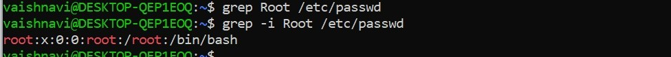
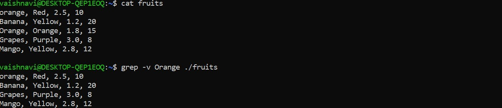

Grep
Grep command is used to find texts from any text input.
Passwd file: stores information about all the users in the
system
- Finding line which contains word as “root” from /etc/passwd file.
- Linux is case sensetive, Root is diffrent that root. Ignoring case in grep with -i option.

- To display things except the given word use -v option
